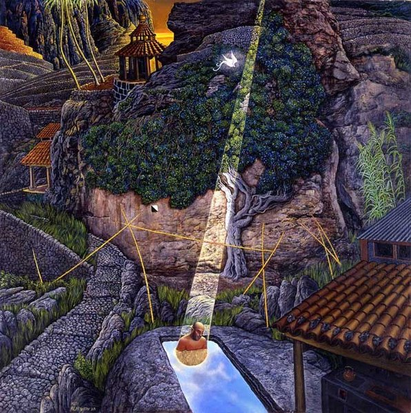

CRVI000007The Black Dog - Spanners
Designed by Black Dog Productions, Richard Burridge, Think 1 · Warp Records · 1995
Designed by Black Dog Productions, Richard Burridge, Think 1 · Warp Records · 1995

CRVI000065Blank Banshee - Blank Banshee 0
Designer unknown · Hologram Bay · 2012
Designer unknown · Hologram Bay · 2012

CRVI000146Bobby Timmons - Soul Time
Designed by Ken Deardoff · 1960
Designed by Ken Deardoff · 1960

CRVI000149Shigeo Fukuda - The Marriage of Figaro - Teatr Narodowy Warsaw
Designed by Shigeo Fukuda
Designed by Shigeo Fukuda

CRVI000175Third Ear Band - Third Ear Band
Designer unknown · Harvest SHVL773 · 1970
Designer unknown · Harvest SHVL773 · 1970

CRVI000212Unknown - Dance Break
Reaction GIF · Saturday Night Live · 58 frames, 4.6s loop
Reaction GIF · Saturday Night Live · 58 frames, 4.6s loop

CRVI000297King Tubby - The Roots Of Dub
Designer unknown · Total Sounds / Clock Tower Records Inc. · 1976
Designer unknown · Total Sounds / Clock Tower Records Inc. · 1976

CRVI000412Heavy D & The Boyz - Peaceful Journey
Designer unknown · Uptown · 1991
Designer unknown · Uptown · 1991

CRVI000654Unknown - Coral
Vice, August 2014 Lifestyle · 2014
Vice, August 2014 Lifestyle · 2014

CRVI000710Tame Impala - Currents
Designed by Robert Beatty · Modular Recordings · 2015
Designed by Robert Beatty · Modular Recordings · 2015

CRVI000860Julian Stanczak - Connecting
145 × 145 cm · 1967
145 × 145 cm · 1967

CRVI001019Édouard Manet - The Spanish Singer
Oil on canvas, 147.3 × 114.3 cm · The Metropolitan Museum of Art, New York · 1860
Oil on canvas, 147.3 × 114.3 cm · The Metropolitan Museum of Art, New York · 1860

CRVI001074Kim Laughton - Untitled

CRVI001076Kim Laughton - Untitled

CRVI001230Mati Klarwein - Self-portrait after Dürer
Painting · plate P01-50s-self-durer on the artist's own site · 1950s
Painting · plate P01-50s-self-durer on the artist's own site · 1950s

CRVI001234Mati Klarwein - Virgin Mary
Painting · plate V20-Virgin-Mary on the artist's own site
Painting · plate V20-Virgin-Mary on the artist's own site

CRVI001240Mati Klarwein - Daily Miracle
Painting · plate v30-Daily-Miracle on the artist's own site
Painting · plate v30-Daily-Miracle on the artist's own site

CRVI001253Philippe Entremont, Leonard Bernstein, New York Philharmonic - Bernstein: The Age of Anxiety
Painting by Mati Klarwein · Columbia Masterworks MS 6885 · 1966
Painting by Mati Klarwein · Columbia Masterworks MS 6885 · 1966

CRVI001259Christian Weber - Pharoah Sanders
Photograph by Christian Weber · GQ 'Jazz Giants' · 2016
Photograph by Christian Weber · GQ 'Jazz Giants' · 2016